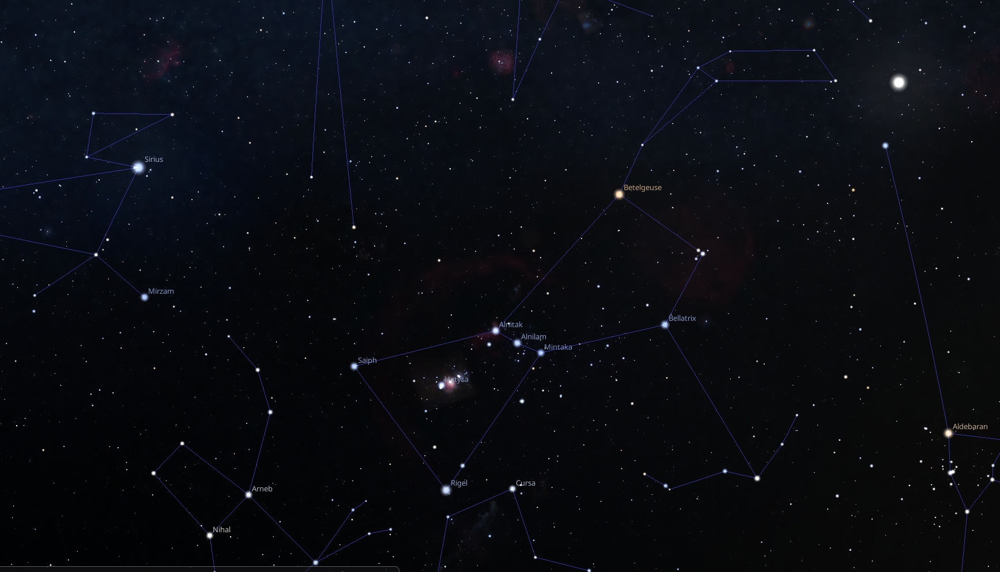
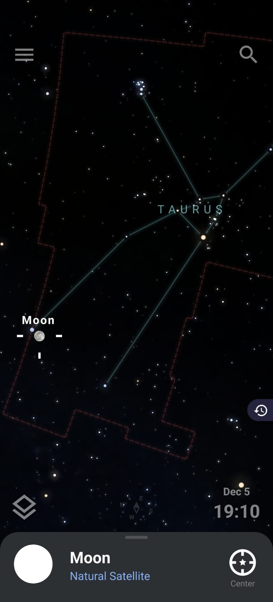
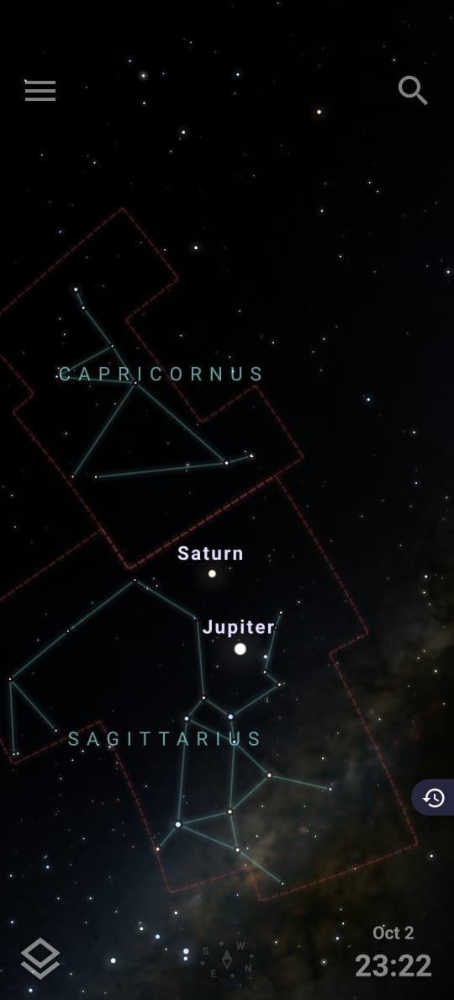
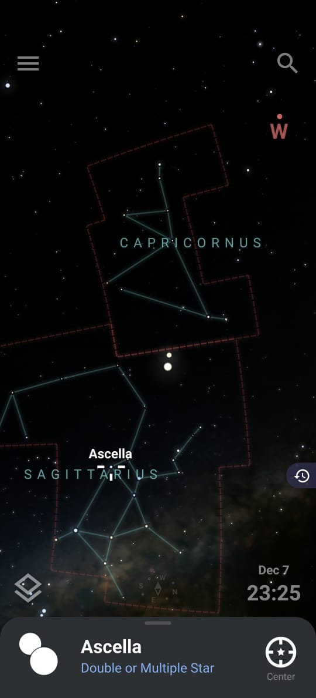
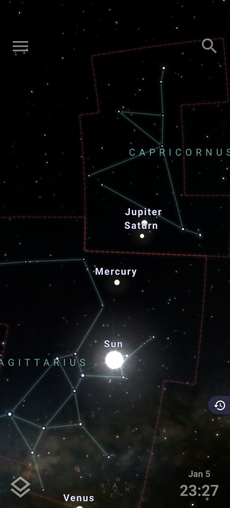
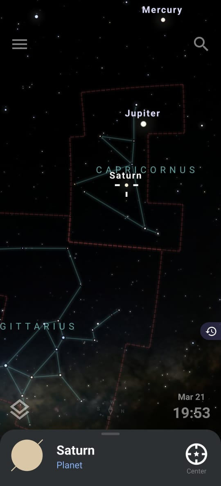
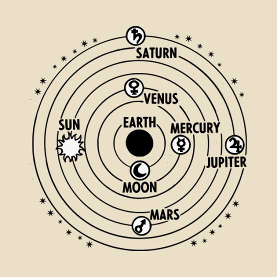

Ashutosh Astrologer
online
Today
Shanky changed the group name to “I hate Moondays!”
Shanky
Hey Ashu! Do you like Mondays?
10:00 ✓✓
Ashutosh
Oh I hate them!
10:01
Shanky
Right? I feel you!
10:01 ✓✓
Shanky
After the Friday movie, stargazing entire Saturday night and sleeping the entire Sunday, I feel so disappointed wondering why Mondays exist?
10:02 ✓✓
Ashutosh
But you know what, last Monday I realized something strange - I did not know why Monday is called "Monday"!
10:03
Ashutosh
Like I know what is a 'day', but what does the 'Mon' in Monday stand for?
10:03
Shanky
Wait, so Sunday is pretty obvious, right?
It's a day named after the Sun.
10:04 ✓✓
Shanky
So, maybe 'Mon' stands for Moon?
10:05 ✓✓
Ashutosh
You know, you are in the right direction Shanky!
10:06
Shanky
Yeah, I think so!
10:06 ✓✓
Shanky
Then Saturday is probably named after Saturn?
10:07 ✓✓
Shanky
But wait, other than Saturday, Sunday and Monday, the other days don't really make sense, do they?
10:08 ✓✓
Shanky
What is the 'Tue' in a Tuesday?
10:08 ✓✓
Ashutosh
Yeah, we need to delve a little deeper for this. So basically
10:09
Shanky
And Wednesday is meant for people to wed? Should I get married on a Wednesday?
10:10 ✓✓
Ashutosh
That's ridiculous. Wait let me complete what I was saying!
10:11
Ashutosh
I read about it and the answer would simply blow your mind. I can bet on
10:11
Shanky
And are people meant to eat fried chicken on Friday?
10:12 ✓✓
Ashutosh
Now you are simply fooling around! Will you listen to me?
10:13
Shanky
Sorry sorry 😛!
10:13 ✓✓
Shanky
Please carry on!
10:14 ✓✓
Laughs while dieting on KFC
Ashutosh
Okay, since you have raised this point yourself, let me try to answer this in a discussion format.
10:15
Ashutosh
Your point is that Saturday, Sunday and Monday seem to have acquired their names from Saturn, Sun and Moon.
10:16
Ashutosh
While the rest seems arbitrary.
10:16
Ashutosh
Right! But what about the Hindi days of the week?
10:18
Shanky
Oh rightttt!
10:18 ✓✓
Shanky
All the days of the week are named after the Sun, the Moon and the planets. How strange!
10:19 ✓✓
Shanky
Feels like I guessed it right!
10:20 ✓✓
Ashutosh
Indeed! Just so that the reader of this conversation knows what we are talking about
10:21
Fourth Wall broken
Ashutosh
see this table where I associate the Hindi names of the days to the Hindi names of planets.
10:22
Hindi days of the week
Days of the week
(vaar = day) |
Corresponding planet |
English planet |
English day |
| Somavaar | Soma | Moon | Monday |
| Mangalvaar | Mangal | Mars | Tuesday |
| Budhvaar | Budh | Mercury | Wednesday |
| Guruvaar | Guru | Jupiter | Thursday |
| Shukravaar | Shukra | Venus | Friday |
| Shanivaar | Shani | Saturn | Saturday |
| Ravivaar | Ravi | Sun | Sunday |
Shanky
But could this not be arbitrary?
10:24 ✓✓
Shanky
I mean, there are 7 days of the week. So just name them by any 7 things your culture considers holy/sacred?
10:25 ✓✓
Shanky
The celestial objects in the sky have always intrigued humans. Maybe the Indian/Vedic ancestors chose these 7 objects to name their days.
10:25 ✓✓
Shanky
This may not have anything to do with the English days, right?
10:26 ✓✓
Ashutosh
That's definitely a possibility.
10:27
Ashutosh
However, what if I show you a similar list for the French days and corresponding planets?
10:27
Flexing half-learned Français
French days of the week
Days of the week
(di = day) |
Corresponding planet |
English planet |
English day |
| Lundi | Lune | Moon | Monday |
| Mardi | Mars | Mars | Tuesday |
| Mercredi | Mercure | Mercury | Wednesday |
| Jeudi | Jupiter | Jupiter | Thursday |
| Vendredi | Vénus | Venus | Friday |
| Samedi | N/A | N/A | Saturday |
| Dimanche | N/A | N/A | Sunday |
Ashutosh
And in Italiano?
10:29
High on Margherita
Italian days of the week
Days of the week
(dì = day) |
Corresponding planet |
English planet |
English day |
| Lunedì | Luna | Moon | Monday |
| Martedì | Marte | Mars | Tuesday |
| Mercoledì | Mercurio | Mercury | Wednesday |
| Giovedì | Giove | Jupiter | Thursday |
| Venerdì | Venere | Venus | Friday |
| Sabato | N/A | N/A | Saturday |
| Domenica | N/A | N/A | Sunday |
Ashutosh
Tu parles Español?
10:31
That isn't Spanish! Españçais?? Cries in Duolingo
Spanish days of the week
| Days of the week |
Corresponding planet |
English planet |
English day |
| Lunes | Luna | Moon | Monday |
| Martes | Marte | Mars | Tuesday |
| Miércoles | Mercurio | Mercury | Wednesday |
| Jueves | Júpiter | Jupiter | Thursday |
| Viernes | Venus | Venus | Friday |
| Sábado | N/A | N/A | Saturday |
| Domingo | N/A | N/A | Sunday |
Shanky
Wait! Wait! Enough flexing!
10:33 ✓✓
Shanky
I get what you are trying to say.
10:34 ✓✓
Ashutosh
Well actually Japanese and Korean have the same association with planets albeit in a slightly different manner
10:35
Ashutosh
While Arabic and Chinese instead associate the names with counting numbers.
10:35
Ashutosh
Although China
10:36
Shanky
Ore wa nihonjin janai desu, Sensei!
10:36 ✓✓
Flex! Flex Flex! More flex rolls!
Shanky
One thing at a time!
10:37 ✓✓
Ashutosh
Oops! My bad! 😛
10:38
Shanky
So I understand that the association between planets and days of the week seems to be a worldwide phenomenon, but I have 2 questions in mind:
10:39 ✓✓
Shanky
- What are these N/A in Saturdays and Sundays?
- I do not understand why in every culture - Monday (which is associated with the Moon) comes before Tuesday (which is associated with Mars)?
10:40 ✓✓
Shanky
Like, what is this
Moon → Mars → Mercury → Jupiter → Venus → Saturn → Sun
pattern?
10:41 ✓✓
Ashutosh
This is where things actually get interesting!
10:42
Ashutosh
Okay, let me answer your second question first as this requires some elaboration.
10:42
Ashutosh
Let me ask you this - do you know what the word "planet" means?
10:43
Shanky
No! I just heard that it comes from the Greek word πλανήτης (planetes).
10:44 ✓✓
Ashutosh
Do you know what it means?
10:45
Ashutosh
It means ‘wanderers’!
10:46
Ashutosh
If you look into the night sky at any particular time of the year, you will see stars rise in the East and set in the West, quite obviously.
10:47
Ashutosh
What you will never observe though is stars rising independent of each other. They rise together in groups called constellations.
10:47
Ashutosh
You know what constellations are, right?
10:48
Shanky
Roughly speaking, a constellation is a fixed number of stars that always stay close together, forming a pattern like a dog, a hunter or a bull.
10:50 ✓✓
Ashutosh
Correct. So, instead of saying stars rise and set, you might as well say constellations rise and set everyday.
10:51
Shanky
Just look at this picture I took of a constellation which I think is called
Orion. Am I correct?
10:53 ✓✓
Shanky
Orion constellation on top left corner. One of the easily recognizable constellations!
Just look at the 3 stars in a straight line, and you can easily see the other 4 dots surrounding it, giving the appearance of a Hunter or a Butterfly with a belt!
10:54 ✓✓
Ashutosh
Yeah yeah I know you just want to make people jealous by showing how wonderful and dark places you go for stargazing.
10:56
Shanky
But you know there are many such dark sites across the world even now!
10:57 ✓✓
Shanky
If you happen to be in/around Mumbai, feel free to travel with our team
<Edurved Bla Bla> on <Bla Bla> for <Bla Bla Bla>
10:58 ✓✓
Capitalist Scums
Ashutosh
The point is, stars in any particular constellation do not change their position with respect to each other over many millennia.
11:00
Ashutosh
For instance, the shape of Orion that appears to us now as a hunter or butterfly also appeared the same to the Egyptians 4000 years back.
11:01
Ashutosh

Orion constellation on 12th Dec, 2025 BCE.
11:02
Shanky
Oh wow! Did you take this picture 4000 years back?
11:03 ✓✓
Ashutosh
Yeah right! I was Khufu and the aliens that constructed Giza offered me the first ever prototype of UltraGalatic jPhone to click this picture 😑
11:05
Ashutosh
Of course not!
11:05
Ashutosh
This is a screenshot taken from the Stellarium app.
11:06
Ashutosh
Just to let the reader know, we offer tutorials on how to use Stellarium so that you can use it yourself while stargazing. Discover deep sky objects like <Bla Bla Bla>
11:07
Marx & Engels sat on Fourth Wall, Marx & Engels had a Great Fall!
Shanky
Okay I understand, but I think we were talking about planets being 'wanderers'!
11:08 ✓✓
Ashutosh
Yeah sorry! We deviated too much while advertising!
11:10
Ashutosh
Coming back to the point, you may have observed that every night there are a few objects that seem to change their position slowly with respect to these background constellations.
11:11
Shanky
Umm... Moon?
11:11 ✓✓
Ashutosh
Precisely! The most straightforward example is our Moon.
11:12
Ashutosh
Everyday, the Moon rises approximately 50 minutes late compared to the previous day.
11:13
Ashutosh
So, if the constellation Taurus is behind the Moon today, you might find Gemini behind the Moon tomorrow.
11:14
Ashutosh


(Left) Moon is in front of a star in the Taurus constellation on Dec 5, 2025 at 7:10 pm
(Right) Next day at the same time, the Moon has moved to the Gemini constellation
11:15
Ashutosh
The same is true for the Sun and 5 other 'bright dots' in the sky, although they often take years to change their position.
11:16
Ashutosh
Since the Sun, the Moon and these 5 'bright dots' seem to wander in the sky, they were called 'planetes'.
11:17
Shanky
Wow! I had never thought about it like that.
11:18 ✓✓
Shanky
Wait, so both Sun and Moon were considered planets as well?
11:19 ✓✓
Ashutosh
And this is why it made more sense to associate them with the days of the week along with 5 other planets.
11:20
Shanky
Why 5 though? What happened to Uranus and Neptune? They couldn't be seen?
11:21 ✓✓
Ashutosh
Cannot be seen! Not with the naked eye.
11:22
Shanky
And I presume Earth isn't considered a planet as well, since Earth was thought to be the centre of the universe with everything going around it – the Sun, Moon and 5 planets.
11:23 ✓✓
Shanky
But what about the नवग्रह ('navagraha' / 9 planets) in Indian (Vedic) texts?
11:25 ✓✓
Shanky
I always thought Indian ancestors were superior in this matter - they knew all the 9 planets of our solar systems without any requirements for telescopes.
11:26 ✓✓
Ashutosh
Do you really think that's possible?
11:27
Ashutosh
Indian ancestors were great and far beyond what Instagram reelers can even comprehend to achieve
11:28
Tik tok Tik tok Tik tok
Ashutosh
but it's simply an exaggeration (born out of insecurity) to attribute every human achievement to a few Indian ancestors.
11:29
Shanky
Every culture at every different era has produced great minds.
11:30 ✓✓
Shanky
We are here because of the collective achievement of humanity, not just Indian ancestors.
11:31 ✓✓
Ashutosh
And one such achievement was the invention of the telescope which happened much later.
11:32
Ashutosh
Uranus and Neptune are so far away that even with a telescope, you can barely see a blue dot!
11:33
Ashutosh
The 9 planets you talk of are the usual 5 planets, the Sun, the Moon &
2 lunar nodes of Moon - called 'Rahu' and 'Ketu'.
11:34
Ashutosh
The last two are not really planets and hence called "shadow" planets.
11:35
Shanky
What even are "shadow" planets?
11:36 ✓✓
Ashutosh
Let's not digress too much. That is something for another day!
<Blog link >
11:37
Shanky
Okay to sum up, we knew 7 planets that included Mercury, Venus, Mars, Jupiter, Saturn, Sun and Moon.
11:38 ✓✓
Ashutosh
Correct! Now coming to your question of why is there a
Moon → Mars → Mercury → Jupiter → Venus → Saturn → Sun
pattern in the days of the week?
11:40
Ashutosh
Well years of observation revealed something very interesting.
11:41
Ashutosh
From slowest to fastest, one could arrange the planets as follows
Saturn < Jupiter < Mars < Sun < Venus < Mercury < Moon
11:42
Shanky
Woah! How could they observe something like this?
11:43 ✓✓
Ashutosh
It's not really that hard if you come to think of it.
11:44
Shanky
Okay let me guess.
11:45 ✓✓
Shanky
They observed the 'white dot' they called Saturn, actually takes longer time to change position in the sky than the 'brown dot' they called Jupiter
11:46 ✓✓
Shanky
which in turn takes a longer time than the 'red dot' they called Mars, and so on.
11:47 ✓✓
Shanky




From Top Left to Bottom Right:
(1) Jupiter is behind Saturn, both in the Sagittarius constellation.
(2) Jupiter is almost catching up with Saturn.
(3) Jupiter crosses Saturn.
(4) Both have moved into the next constellation - Capricornus, but Jupiter moved faster than Saturn.
11:49 ✓✓
Ashutosh
Precisely!
11:50
Ashutosh
But why does Saturn change its position slowly compared to Jupiter?
11:51
Shanky
Well today we know that all the planets move in (approximate) circles with the Sun at the center (Heliocentric).
11:52 ✓✓
Shanky
Saturn is the farthest away from our Sun. Before that is Jupiter, Mars, Earth, Venus and finally Mercury.
11:53 ✓✓
Shanky
Newton showed that the farther a planet is, the slower travels in its orbit. So, Saturn is the slowest while Mercury is the fastest.
11:54 ✓✓
Shanky
Naturally, Saturn changes position slower compared to Jupiter.
11:55 ✓✓
Ashutosh
Correct Sire!
11:56
Ashutosh
Indeed this is how the Geocentric model was constructed! Look!
11:57
Ashutosh

Geocentric Model, with the Earth at the centre surrounded by 7 planets in descending order of speed, finally ending at the distant stars.
11:58
Shanky
Wow right! I have seen this before but now it makes more sense.
11:59 ✓✓
Shanky
And I presume the Moon is the fastest 'planet' in this model because even in reality, the Moon doesn't really orbit the Sun but the Earth!
12:00 ✓✓
Ashutosh
It is impossible to improve upon Beatrice's reply!
12:01
Beatrice was a girl, you old couple!
Did you not hear? She was a girl!
Shanky
Okay its clear to me now that in order from slowest to fastest, the 7 planets can be arranged as
Saturn < Jupiter < Mars < Sun < Venus < Mercury < Moon
12:03 ✓✓
Shanky
But why does Sunday come after Saturday; and then why Monday?
12:04 ✓✓
Shanky
Seems like there is no order in which the days are associated with the planets.
12:05 ✓✓
Ashutosh
There is one and I promise it's beautiful!
12:06
Ashutosh
First let me tell you that by the time our ancestors decided to name the days, they already had the concept of "24 hours in a day".
12:07
Ashutosh
This was decided as early as the Egyptian civilization.
12:08
Shanky
Wait, they knew?
12:08 ✓✓
Shanky
How on Earth would they know the concept of an hour so early?
12:09 ✓✓
Shanky
Like was the length of the hour same back then as it is now?
12:10 ✓✓
Shanky
Also why 24 and not say 47?
12:10 ✓✓
Ashutosh
That will again take us too far! Let's discuss this on yet another day
< Blog Bla Bla>
12:12
Ashutosh
In many civilizations back then, a day used to start from Sunrise today and would end at Sunrise tomorrow.
12:14
Ashutosh
For the sake of argument, let the sunrise be at 6 am (of course by modern conventions)!
12:15
Ashutosh
What our ancestors did was to assign each hour of a day to be 'ruled' by a planet.
12:16
Ashutosh
'Ruled' because they believed the planets to be Gods and have some sort of influence on human welfare.
12:18
Ashutosh
This is why all the planets known to the Egyptians, Babylonians, Greek, Indians were named after their respective Gods.
12:19
Shanky
Makes sense!
12:20 ✓✓
Shanky
I mean who wouldn't consider them to be Gods when they seem so bright and seem to wander on their own, not obeying the stars!
12:21 ✓✓
Ashutosh
Anyway the assignment was as follows:
12:24
Ashutosh
- Start with the slowest planet Saturn.
- Assign the 1st hour of the day (6 am - 7 am) to Saturn.
- Assign the 2nd hour of the day (7 am - 8 am) to the next slowest planet - Jupiter
- The 3rd hour (8 am - 9 am) goes to Mars, and so on.
- In this way, the 7th hour (12 pm - 1 pm) goes to the Moon.
- Assign the 8th hour (1 pm - 2 pm) once again to Saturn, and repeat the pattern.
12:26
Ashutosh
Look at this table to see what I mean. Each column represents a day, so read it
columnwise .
12:27
Ruling Planets
| Time of the Day |
Day 1 |
Day 2 |
Day 3 |
Day 4 |
Day 5 |
Day 6 |
Day 7 |
| 6 am - 7 am | SATURN | SUN | MOON | MARS | MERCURY | JUPITER | VENUS |
| 7 am - 8 am | Jupiter | Venus | Saturn | Sun | Moon | Mars | Mercury |
| 8 am - 9 am | Mars | Mercury | Jupiter | Venus | Saturn | Sun | Moon |
| 9 am - 10 pm | Sun | Moon | Mars | Mercury | Jupiter | Venus | Saturn |
| 10 am - 11 am | Venus | Saturn | Sun | Moon | Mars | Mercury | Jupiter |
| 11 am - 12 pm | Mercury | Jupiter | Venus | Saturn | Sun | Moon | Mars |
| 12 pm - 1 pm | Moon | Mars | Mercury | Jupiter | Venus | Saturn | Sun |
| 1 pm - 2 pm | Saturn | Sun | Moon | Mars | Mercury | Jupiter | Venus |
| 2 pm - 3 pm | Jupiter | Venus | Saturn | Sun | Moon | Mars | Mercury |
| 3 pm - 4 pm | Mars | Mercury | Jupiter | Venus | Saturn | Sun | Moon |
| 4 pm - 5 pm | Sun | Moon | Mars | Mercury | Jupiter | Venus | Saturn |
| 5 pm - 6 pm | Venus | Saturn | Sun | Moon | Mars | Mercury | Jupiter |
| 6 pm - 7 pm | Mercury | Jupiter | Venus | Saturn | Sun | Moon | Mars |
| 7 pm - 8 pm | Moon | Mars | Mercury | Jupiter | Venus | Saturn | Sun |
| 8 pm - 9 pm | Saturn | Sun | Moon | Mars | Mercury | Jupiter | Venus |
| 9 pm - 10 pm | Jupiter | Venus | Saturn | Sun | Moon | Mars | Mercury |
| 10 pm - 11 pm | Mars | Mercury | Jupiter | Venus | Saturn | Sun | Moon |
| 11 pm - 12 am | Sun | Moon | Mars | Mercury | Jupiter | Venus | Saturn |
| 12 am - 1 am | Venus | Saturn | Sun | Moon | Mars | Mercury | Jupiter |
| 1 am - 2 am | Mercury | Jupiter | Venus | Saturn | Sun | Moon | Mars |
| 2 am - 3 am | Moon | Mars | Mercury | Jupiter | Venus | Saturn | Sun |
| 3 am - 4 am | Saturn | Sun | Moon | Mars | Mercury | Jupiter | Venus |
| 4 am - 5 am | Jupiter | Venus | Saturn | Sun | Moon | Mars | Mercury |
| 5 am - 6 am | Mars | Mercury | Jupiter | Venus | Saturn | Sun | Moon |
Ashutosh
Observe that the 24th hour (5 am - 6 am) of the 1st day ends with Mars.
12:30
Ashutosh
Hence the 25th hour (which is equal to the 1st hour of the next day) goes to the Sun.
12:30
Ashutosh
Similarly, the 24th hour of the 2nd day ends with Mercury. Hence the 1st hour of the third day goes to the Moon.
12:31
Ashutosh
Can you see the pattern emerging?
12:31
Shanky
My goodness! This is simply blowing my mind!
12:32 ✓✓
Shanky
Yes, clearly I can see the pattern!
12:33 ✓✓
Shanky
Basically if I look at the 1st hour of each day, I see
Moon → Mars → Mercury → Jupiter → Venus → Saturn → Sun
12:34 ✓✓
Ashutosh
And so it was decided that the planet that rules the 1st hour of a day would be the
Daylord and the day shall be named after the planet.
12:36
Shanky
Never would I have even dreamt that there was such a precise mathematical computation behind naming days!
12:37 ✓✓
Ashutosh
Neither would I have!
12:38
Shanky
Since this naming convention was decided as early as Babylonians, I presume everyone else in the world like the Greeks, Romans, Indians, Arabic, Chinese either adopted the convention or discovered something very similar, right?
12:40 ✓✓
Ashutosh
That is a very valid guess and it seems to be the case.
12:41
Ashutosh
Many places in the world have adopted this exact association of planets with days, using the same assignment strategy.
12:42
Ashutosh
Even as early as the Imperial Roman Calendar would name the days of the week as follows
12:43
Imperial Roman days of the week
Days of the week
(Dies = day) |
Corresponding planet |
English planet |
English day |
| Dies Lvna | Lvna | Moon | Monday |
| Dies Martis | Mars | Mars | Tuesday |
| Dies Mercvrivs | Mercvrivs | Mercury | Wednesday |
| Dies Iovis | Ivppiter | Jupiter | Thursday |
| Dies Veneris | Venvs | Venus | Friday |
| Dies Satvrni | Satvrnvs | Saturn | Saturday |
| Dies Solis | Sol | Sun | Sunday |
Ashutosh
However, remember that in the early days, information spreading took lots of years, and to adopt them over the local convention took even longer.
12:45
Shanky
I see! So some places might have missed it.
12:46 ✓✓
Ashutosh
For instance, the Middle Eastern countries were heavily influenced by the Abrahamic religions - Judaism, Islam and Christianity.
12:47
Ashutosh
And the common belief in all three of them is that God created the world in 6 days & rested on the 7th day.
12:48
Ashutosh
Since this belief is at least as old as 500 BCE, they connected this concept with the days of the week without being influenced by the planetary naming convention.
12:49
Ashutosh
If you see the Arabic names of days
12:49
Arabic days of the week
Days of the week
(Al = The) |
Corresponding number
(Arabic) |
English equivalent |
English names
(Days) |
| Al 'Ithnayn | 'Ithnayn (Two) | The Second | Monday |
| Al Thulathaa' | Thalathaa' (Three) | The Third | Tuesday |
| Al Arba'a | Arba'a (Four) | The Fourth | Wednesday |
| Al Khamees | Khamsa (Five) | The Fifth | Thursday |
| Al Juma'a | Juma'a (Gathering) | The Gathering | Friday |
| As Sabt | Sabt (Sabbath) | The Sabbath | Saturday |
| Al ’Ahad | Waahid (One) | The First | Sunday |
Ashutosh
you will see that they associate Sunday as "The First Day" - since it was the day God created Heavens and Earth.
12:51
Shanky
Let there be light!
12:52 ✓✓
Ashutosh
Then comes Monday which is named as “The Second Day”, and so on, until Friday - when God created Humans.
12:53
Ashutosh
Finally comes Saturday, when after all His hardwork, He took rest.
12:54
Ashutosh
The Arabic word for rest is Sabt which means Sabbath (i.e., day of rest).
12:55
Shanky
And what about those "N/A" in the French / Italian / Spanish days?
12:55 ✓✓
Ashutosh
Well following the Christian influence in many European countries, Sunday was changed to "Dies Dominica" which means "Day of the Lord".
12:56
Ashutosh
And Saturday was changed to "Sabbath" which means "Day of rest".
12:57
Ashutosh
Sabbath is called
Samedi / Sabato / Sábado respectively in French / Italian / Spanish, while Dominica is called
Dimanche / Domenica / Domingo .
12:58
Shanky
And this explains why you wrote N/A in those European countries!
12:59 ✓✓
Shanky
Because there are no planets associated with Sabbath and Domenica!
12:59 ✓✓
Shanky
What's the deal with English though? Why didn't it seem to work after Monday?
13:01 ✓✓
Ashutosh
Actually, if you speak any one of the Nordic languages - Danish, Swedish, Norwegian - then you wouldn't have much of an issue.
13:02
Nordic days of the week
Days of the week
(dag = day) |
Corresponding Norse Gods |
English planet |
English day |
| Mandag | Máni | Moon | Monday |
| Tirsdag | Tyr | Mars | Tuesday |
| Onsdag | Odin | Mercury | Wednesday |
| Torsdag | Thor | Jupiter | Thursday |
| Fredag | Freya | Venus | Friday |
| Lørdag | Njord | Saturn | Saturday |
| Søndag | Sunna | Sun | Sunday |
Ashutosh
Now these names sound very familiar right?
13:04
Shanky
Yeah they look almost like English day names!
13:05 ✓✓
Ashutosh
After the fall of Roman civilization, although the planetary naming convention was adopted, the corresponding Gods were changed to the local Gods of the region.
13:06
Ashutosh
In the Nordic countries, the Norse mythology made the following replacements:
Mars → Tyr
Mercury → Odin
Jupiter → Thor
Venus → Freya
13:08
Ashutosh
Since England was heavily attacked by the Vikings and the Anglo-Saxons, they heavily influenced the structure of the modern English language - thus giving us the names of the days we have with us at present!
13:10
Shanky
I love Mondays!
13:11 ✓✓
Shanky changed the group name to “I love Moondays!”